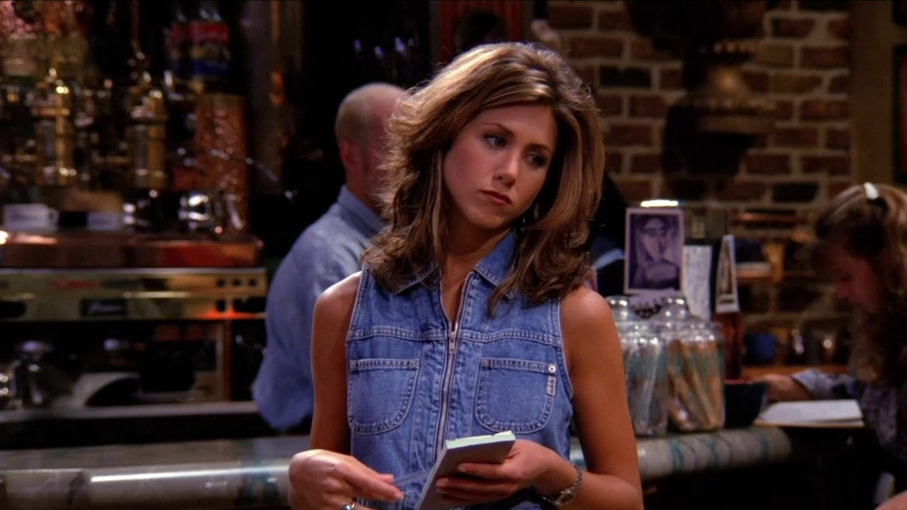
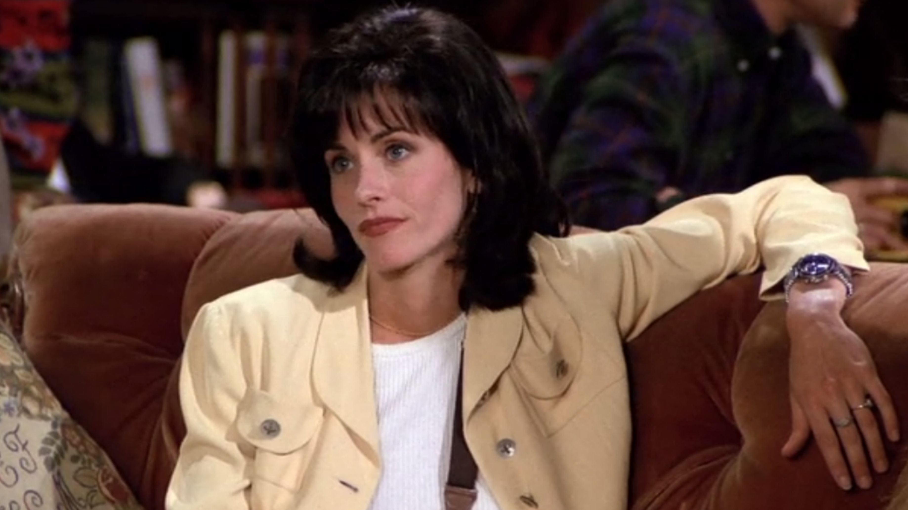
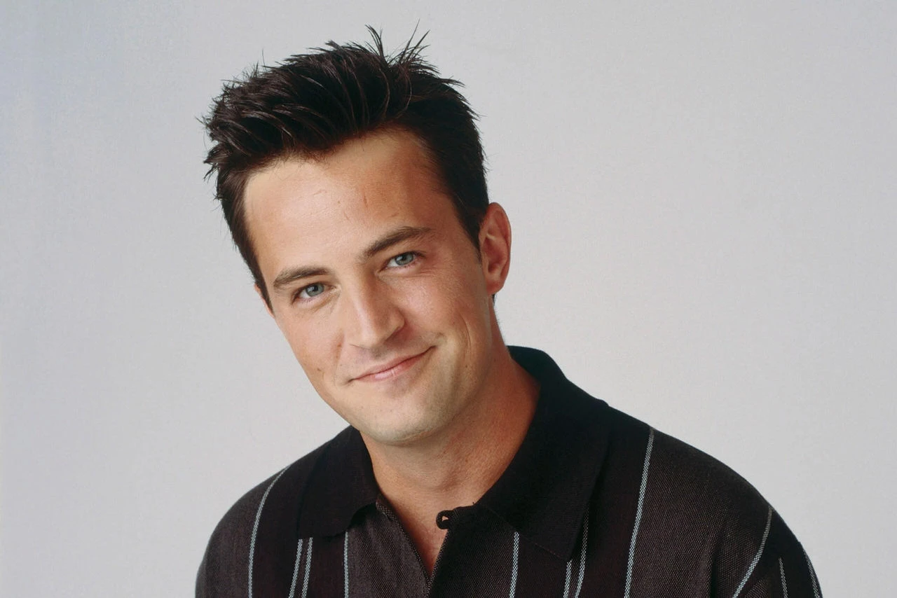
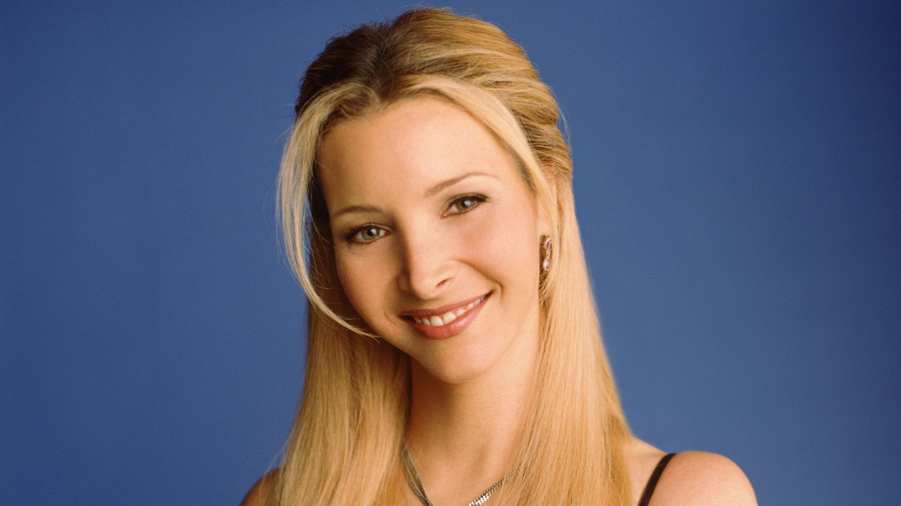
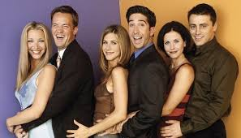
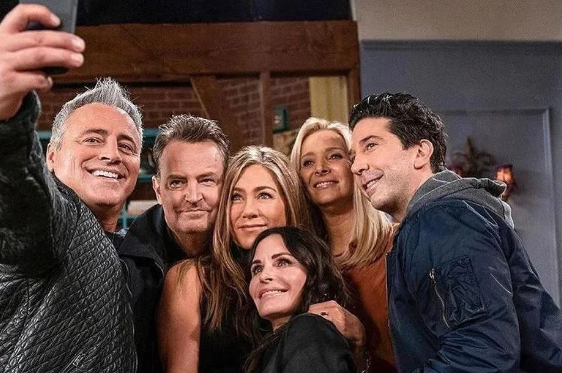
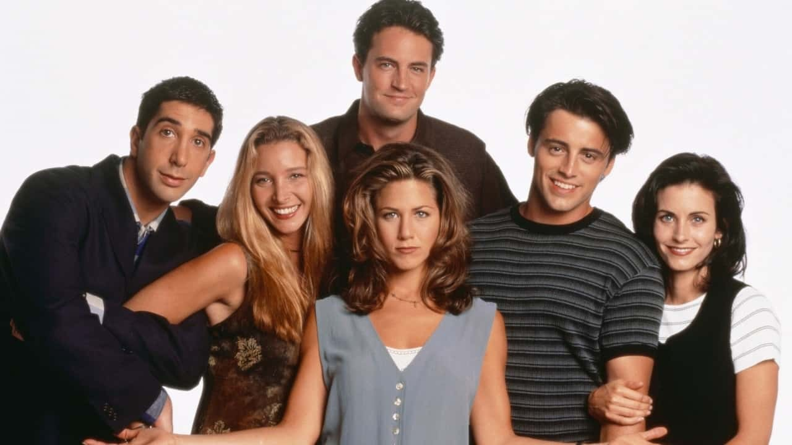
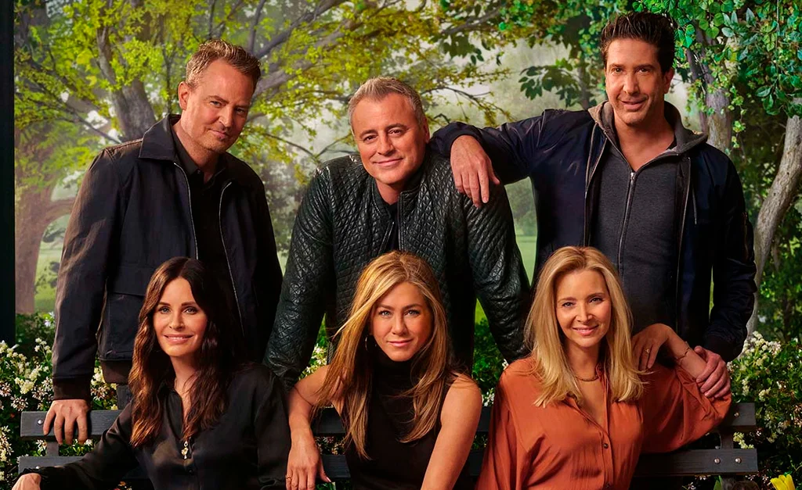

Rachel Green
Fashionista e ambiciosa, começa a série deixando a vida confortável para buscar independência e amor.
Seis amigos – Rachel, Ross, Monica, Chandler, Joey e Phoebe – vivem na cidade de Nova York, compartilhando risos, dramas e aventuras da vida cotidiana. Entre relacionamentos, trabalho e muita comédia, eles mostram o verdadeiro significado de amizade e família escolhida.

Fashionista e ambiciosa, começa a série deixando a vida confortável para buscar independência e amor.
Paleontólogo apaixonado e romântico, sempre em busca de relacionamentos duradouros e aventuras científicas.

Chef perfeccionista, competitiva e muito organizada, conhecida pelo cuidado com os amigos.

Engraçado e sarcástico, trabalha com estatísticas e dados, e encontra seu caminho no amor com Monica.
Aspirante a ator, charmoso e divertido, sempre leal aos amigos e apaixonado por comida.

Excêntrica e espirituosa, musicista e massagista, com histórias de vida únicas e perspectiva positiva.



